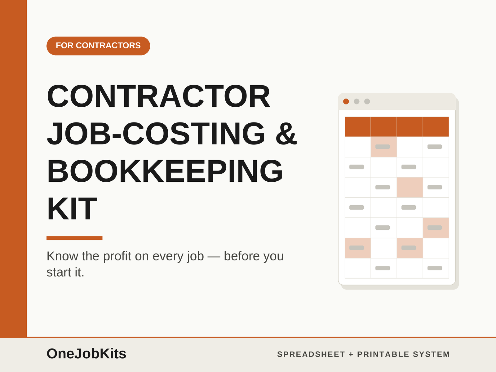

OneJobKits · Kit #2
Contractor Job-Costing & Bookkeeping Kit — contractor estimate template

If you searched for a contractor estimate template, you probably already have the harder problem the template cannot solve: the job is finished, the client is happy, and you still cannot say — in dollars — whether it made money. The estimate lived in one place, the labour hours in another, the material receipts in the truck, and the change orders in a text thread.
This page gives you the first tool free, right here: a one-job cost calculator that shows the real profit on a finished job. Below it is the full kit it comes from — a 40-tab spreadsheet system that runs estimate vs actual on every job, all year, together with the invoices, expenses, 1099 tracking and year-end dashboards a small contracting business actually needs. It organises your numbers. It does not give tax or accounting advice — that stays with your accountant, who will receive much cleaner numbers.
Free download — start with the One-Job Cost Calculator
The Did That Job Make Money? — Free 1-Job Cost Calculator is a single spreadsheet sheet: enter the estimate, labour, materials, subcontractors and change orders for one finished job, and it shows the real profit. It takes about five minutes with your job paperwork in front of you, and it is the same estimate-vs-actual logic the full kit runs automatically.
Download the free one-job cost calculator (Excel)Get it on Gumroad instead
What the calculator does not do: it covers one job, once, by hand. The full kit below covers every job at the same time — the dashboard fills itself in from your registers, the invoices track their own balances, and January stops being a scramble through a shoebox.
What's inside the full kit
- The workbook (Excel; Google Sheets version in Pro) — 40 tabs in one linked system, no subscription
- JOBS — one row per job: client, address, dates, contract amount, status, and the estimate columns the rest of the system reads
- JOB COST DASHBOARD — estimate vs actual for every job: labour, materials, subcontractors and other costs pulled automatically from the registers, with the real profit per job
- LABOUR · MATERIALS · SUBCONTRACTORS · CHANGE ORDERS — the four registers every cost lands in, each row keyed by Job ID; change orders count only when approved
- INCOME · EXPENSES · INVOICES · PAYMENTS — invoice balances and status calculate themselves; payments are logged against invoices
- ACCOUNTS RECEIVABLE · ACCOUNTS PAYABLE · CASH FLOW — what is owed to you, what you owe, and the month-by-month cash picture, side by side
- PAYROLL LOG · MILEAGE LOG · 1099 TRACKER — subcontractor totals pull themselves together by name, so 1099 season is a printout, not a panic
- TAX YEAR-END dashboard · CHART OF ACCOUNTS — the year's totals organised the way your accountant asks for them
- ESTIMATES · QUOTES COMPARE · PRICE & MARKUP CALC · BREAK-EVEN CALC — price the next job from what the last ones actually cost
- VENDORS & SUPPLIERS · MATERIALS PRICE LIST · EQUIPMENT LOG · VEHICLE LOG · RECEIPTS LOG · SUB PAYMENTS · CLIENT LIST — the running records a shop accumulates
- JOB SCHEDULE · CREW TIMESHEET · PERMITS & INSPECTIONS · INSURANCE & LICENSES · LOANS & CREDIT · WARRANTY & CALLBACKS — the operations layer, in the same file
- WEEKLY REVIEW · MONTHLY CLOSE CHECKLIST · DASHBOARD · NOTES & HOW-TO — live business totals plus the short routines that keep the system current
- Worked example file — the whole kit filled in with two fictional jobs (a kitchen remodel and a bathroom remodel), so you can see how every register connects before you type a real number
- Setup guide (PDF) — 15 plain-language pages, step by step
- Accountant handover checklist (PDF) — the year-end checklist you hand over with the numbers
- Pro ($79) adds: the Google Sheets version of the workbook, the Estimate & Proposal template pack, and the Client Invoice pack
A filled example — so you can see the finished thing
The full kit ships with the workbook already filled in for two fictional jobs, so you can watch an estimate meet its actuals. Here is what the example's JOBS page and invoice register show:
| From the example file | The fictional jobs |
|---|---|
| Rivera Kitchen Remodel (J-101) | Contract $48,500 · estimates: labour $14,000, materials $16,000 · ran 2 Mar – 17 Apr 2026 · status Complete |
| Its change orders | Two, both approved and signed: under-cabinet lighting $1,450 and a waterfall island upgrade $2,200 — $3,650 the generic books would have lost in a text thread |
| Its invoices | $14,550 deposit invoice + $37,600 final invoice = $52,150 — exactly contract plus approved change orders, both shown paid in the example |
| Nguyen Bathroom Remodel (J-102) | Contract $26,900 · estimates: labour $9,500, materials $8,200 · started 20 Apr 2026 · status In Progress |
That is the shape of the whole system: the estimate is written down once, every cost is logged against the same Job ID, and the dashboard does the comparing — so "did that job make money?" takes ten seconds to answer, for every job, not just the one you remember.
Who it is for
Owner-operators and small-crew residential contractors, remodelers and specialty trades — businesses too big for a shoebox and too small for a bookkeeper — who price jobs, run subs, and want to know their real numbers before tax season tells them.
Who it is not for
Anyone who wants their taxes filed or their payroll processed for them: this kit files nothing and pays nobody. It is also more system than a one-person handyman doing three jobs a year needs — the free calculator above honestly covers that case.
Free reading from the hub: What details does my crew need before a job? and How to track job payments and cash timing.
Questions buyers ask
- Did that job actually make money — how do I know?
- Run the job through its own page. The Job Cost Dashboard lines the estimate up against the actual labour, materials, subcontractor and other costs pulled from your registers, per job — so the answer is a number, not a feeling. The free calculator on this page does exactly this for one finished job.
- What breaks a small contracting shop's cash flow?
- Cash timing, most often: money going out on materials and payroll weeks before the invoice gets paid. The kit's monthly Cash Flow tab and Accounts Receivable tab show what is due in and what is owed out, side by side, before the gap arrives.
- How do I stop job details getting lost between the sale and the site?
- Give every job one ID and one row. The JOBS tab holds the client, address, dates, contract amount and estimates; every labour hour, material receipt and sub invoice in the registers carries the same Job ID, so the job file builds itself as the work happens — nothing lives only in a text message.
- Does this replace my accountant or give tax advice?
- No. It is a bookkeeping organiser. The Tax Year-End dashboard totals your year the way accountants ask for it, and the included handover checklist is literally titled "hand this to your accountant" — they make the final calls; the kit hands them clean numbers.
- Excel or Google Sheets — which do I get?
- The Standard kit is the Excel workbook. Pro adds the same workbook in Google Sheets format, plus the estimate & proposal template pack and the client invoice pack. No macros are needed for the core registers and dashboards.
- How is this different from bookkeeping software?
- Two ways. It is built around jobs — change orders, job costing, 1099 tracking — instead of generic categories, and it is a one-time purchase of files you own, not a monthly subscription. It does not connect to your bank; you (or your crew) enter the numbers once, in the registers.
- What does the free calculator cover, and what does the full kit add?
- The free calculator checks one finished job: estimate, labour, materials, subs and change orders in, real profit out. The full kit does that for every job, all year — and adds invoices and payments, receivables and payables, payroll and mileage logs, the 1099 tracker, monthly cash flow and the year-end tax dashboard.
Prices
Standard: $39 · Pro: $79 — one-time payment, digital download. No subscription; the files are yours.
Can't find the kit you need?
We build it. Ask us — first asker gets it at half the shelf price. Tell us the job at onejobkits.com and we will build the kit for it.
Related kits
Please know: this is a bookkeeping organiser only — not tax, accounting or legal advice, and no substitute for your accountant. All example data is fictional (the Rivera and Nguyen jobs, their crews and clients are invented, and the example file says so).